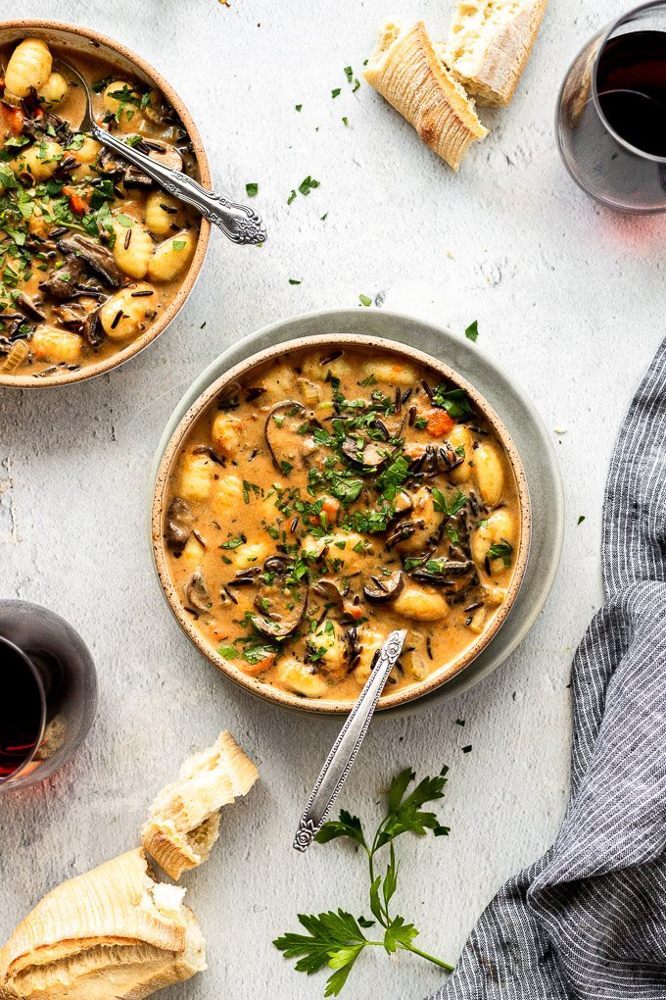

Mushroom Gnocchi Soup with Wild Rice

Description
In need of a elevated, sophisticated winter comfort classic? Here is the perfect recipe for not only your weekday, but is a statement meal at winter dinner parties. The one thing everyone loves in the winter is soup. So what if we take a spin on gnocchi soup. Adding in black rice for not just flavor but a bold color statement. This meal is going to wow any guest that has the delight of eating this delicious both of yummy goodness.
Something that certainly makes this a statement meal is it's ingredients. Ofcourse the basics of every amazing soup are present: onion, carrot, and celery. Where this soup beats out others, in my onion, is the addition of the gnocchi. These little balls of carby goodness not only add depth of flavor, but make for a fun texture. Adding in rice to this dish makes it all the more filling and satisfying. And if you're like me and mushroom obsessed, then this is sure to become one of your favorites to spice things up.
Ingredients
- 2 T unsalted butter
- 3/4 c yellow onion, diced
- 3/4 c celery, 2-3 stalks, diced
- 3/4 c carrots, 2 medium whole carrots, diced or round sliced
- 1 1/4 t kosher salt
- Pinch of red pepper flakes, optional
- 1/4 t black pepper
- 3 garlic cloves, minced
- 8 oz baby bella or white mushrooms, sliced
- 1/4 tsp dried basil
- 1/4 tsp dried thyme
- 1/4 tsp dried parsley
- 1 cup wild rice blend
- 32 oz. vegetable stock
- 1 1/2 to 2 c water
- 16 oz shelf-stable gnocchi
- 1/4 c half and half, room temp./
Instructions
- In a large Dutch Oven melt butter over medium-high heat. Add diced onion, carrot, and celery, cooking for 3-4 minutes. Add salt/pepper and red pepper flakes, if desired.
- Add garlic, mushrooms, pinch of salt and stir together. Cook for 6-8 minutes until mushrooms are brown and a lot of the liquid has evaporated.
- Stir in dried herbs and more salt. Slowly stir in veggie broth and 1 cup of water. Add the wild rice blend and bring the pot to a boil. Cook the wild rice 2-3 minutes shy of al dente - this will vary depending on the wild rice you use; check packed instructions. Taste test and adjust salt levels as needed.
- Add the package of gnocchi and boil for 2-3 minutes, or according to package directions. If needed, add additional water/stock depending on how much has been absorbed and your desired consistency.
- Remove from heat and stir in half-and-half.
- Garnish with fresh parsley as desired and serve!